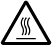
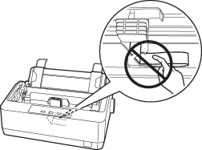

|
|
|||
 |
||||
主页 > 安全
安全指导
根据《微型计算机商品修理更换退货责任规定》及爱普生(中国)有限公司的保修政策，在保修期（含“三包”有效期）内未经爱普生公司的书面授权对产品进行的拆卸、维修、改装等而造成的故障、损坏将不享受“三包”服务。本产品部分位置如果贴有专用的“保修标贴”，请用户在保修期内妥善保护本产品的专用“保修标贴”，否则爱普生公司可能将因“保修标贴”的脱落、损毁而拒绝提供“三包”服务。
警告、注意和注释
 警告
警告|
必须小心执行以免伤害人体。
|
 注意
注意
|
必须认真遵守以免损坏设备。
|
 注释
注释 |
包含重要的信息和打印机操作的有用提示。
|

热部件警告符号
|
 |
本符号出现在打印头和其他部件以标明这些部件可能很烫。 切勿在刚用完打印机后触摸这些部件。让其冷却几分钟之后才可以触摸。此警告符号表示：当心高温表面。
|
重要的安全指导
请在使用打印机前阅读所有下述安全指导。 此外，请遵守打印机上标注的所有警告和提示。
当安装打印机时
请勿将打印机放在不稳定的表面上或靠近辐射体或热源的地方。
将打印机安放在平稳的平面上。 如果打印机倾斜或有一定的角度，就不能正常工作。
不要将此产品放置在软的地方（如：床和沙发上），小和封闭的空间（如：空气不流通的地方）。
请勿堵塞或盖住打印机机箱内的插槽和开口，也不要将异物插入插槽中。
在打印机周围留出足够的空间，以便操作和维护。
如有必要，请将打印机安放在容易连接到网络接口数据线的地方。
仅使用在打印机标签上指定的电源类型。 如果不能确定您所在区域的供电类型，请与当地的供电公司或爱普生认证服务机构联系。
把所有设备都连接到正确接地的电源插座上。 避免所使用的插座与复印机或空调系统这些经常开关的设备在同一回路中。
请勿使用损坏或磨损的电源线。
不要将电源线放置在磨损、切割、磨擦、弯曲、纽结和其他容易被损坏的地方。
如果您的打印机使用附加电源线，应确保接入该附加电源线的所有设备的总额定安培数不超过此电源线的额定安培数。 另外，切记插入墙壁插座所有设备的总安培数不要超过墙壁插座的额定安培数。
仅使用随此产品附带的电源线。 使用其他的电源线可能会引起火灾或电击。
此产品电源线仅用于此产品。 将其用于其他设备可能会造成火灾或电击。
确保交流电源线符合当地的安全标准。
避免在温度和湿度急剧变化的地方使用或存放打印机。 使打印机远离阳光直射、强光、热源或者过湿或多尘的地方。
避免放在容易震动和摇晃的地方。
将打印机安放在靠近壁式电源插座，易于插拔电源线的地方。
让整个计算机系统远离潜在的电磁场干扰，例如:扩音器或无线电话基站。
避免使用受壁式开关或自动定时器控制的电源插座。 突然断电会破坏打印机或计算机内存中的信息。 同样，要避免将打印机电源插座与大型电机或其他能够造成电压波动的大功率设备串入同一电路使用。
使用接地的电源插座，不要使用转接插头。
如果您打印使用打印机支架，按下面指导：
-使用一个至少可以支撑二倍于打印机重量的支架。
-请不要使用让打印机倾斜的支架。 总是让打印机保持水平。
-请安置好打印机电源线和接口数据线，以免影响走纸。 如有可能，请将电源线固定在打印的支架腿上。
-使用一个至少可以支撑二倍于打印机重量的支架。
-请不要使用让打印机倾斜的支架。 总是让打印机保持水平。
-请安置好打印机电源线和接口数据线，以免影响走纸。 如有可能，请将电源线固定在打印的支架腿上。
请不要将本产品放在低温或多尘的地方。
如果有并口，请不要热插拔（带电插拔）并口数据线。
如果有接地线，须将接地线固定并拧紧螺丝。
请妥善使用/保管本产品，以避免因使用/保管不当（如鼠害、液体渗入等）造成故障、损坏。
本文中相关的电源线及插头的示意图和描述仅供参考，在中国大陆地区所销售产品的电源线及插头，符合中国法律法规。
请确保将电源线插头的接地插脚插入电源插座的接地插孔。如果插接不正确，可能会导致电击、火灾或损坏您的设备。且请确保插座已接地。
当维护打印机时
在清洁打印机前先拔去电源插头，只能用湿布清洁。
不要将液体溅到打印机上。
除非本指南中特别说明，否则不要擅自尝试维修打印机。
在遇到下列情况时，请断开打印机电源后与爱普生认证服务机构联系：
i.如果电源线或插头已损坏。
ii.如果液体进入打印机。
iii.如果打印机被摔落或外壳受损。
iv.如果打印机无法正常运行或性能出现明显变化。
i.如果电源线或插头已损坏。
ii.如果液体进入打印机。
iii.如果打印机被摔落或外壳受损。
iv.如果打印机无法正常运行或性能出现明显变化。
不要在此产品及其周围使用装有易燃性气体的气雾清洁剂。 因为这样做会发生火灾。
请仅对操作指导中有说明的控制部分进行调节。
不要触摸打印机内部的白色线缆。

当处理打印纸时
不要装入卷曲、折叠的打印纸。
当操作打印机时
请仅对用户文档中有指导的控制部分进行调整。 不适当的调整其他控制可能会损坏打印机，且需要专业技术维护人员花费大量的时间进行维修。
每次关闭打印机后，都要至少等5秒钟才能再将其打开。否则会损坏打印机。
当打印自检时不要关闭打印机电源。 总是按下暂停按钮来停止打印，然后再关闭打印机电源。
不要把电源线接到与打印机电压不符合的电源插座上。
不要自己更换打印头，可能损坏打印机。 同样，当更换打印头时，打印机的其他部件也需要检查。
需要用手移动打印头才能更换色带架。 如果刚用过打印机，打印头可能很烫，等其冷却几分钟后再触摸打印头。
使用限制
将本产品用于飞机、列车、船舶、汽车等的与运行直接相关的装置、防灾防盗装置、各种安全装置等要求机能、精度等具备高度可信性、安全性的用途时，为维持这些系统整体的可信性与安全，请采取故障自动防护设计及冗长设计等措施，在确保系统全体安全的基础上使用本公司产品。
本产品并非以使用于太空机器、干线通讯机器、原子力控制机器、医疗机器等需具备高度可信性与安全性的用途。若使用于前述用途时，请客户充分进行确认和判断本产品的适用性。
本产品并非以使用于太空机器、干线通讯机器、原子力控制机器、医疗机器等需具备高度可信性与安全性的用途。若使用于前述用途时，请客户充分进行确认和判断本产品的适用性。